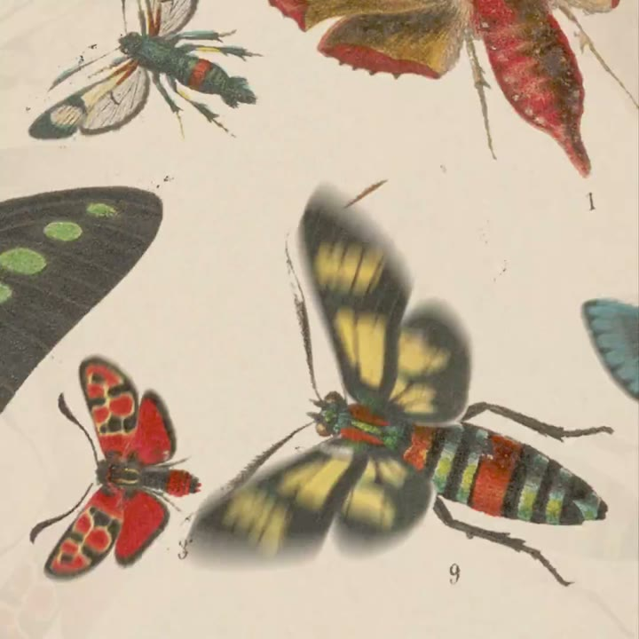
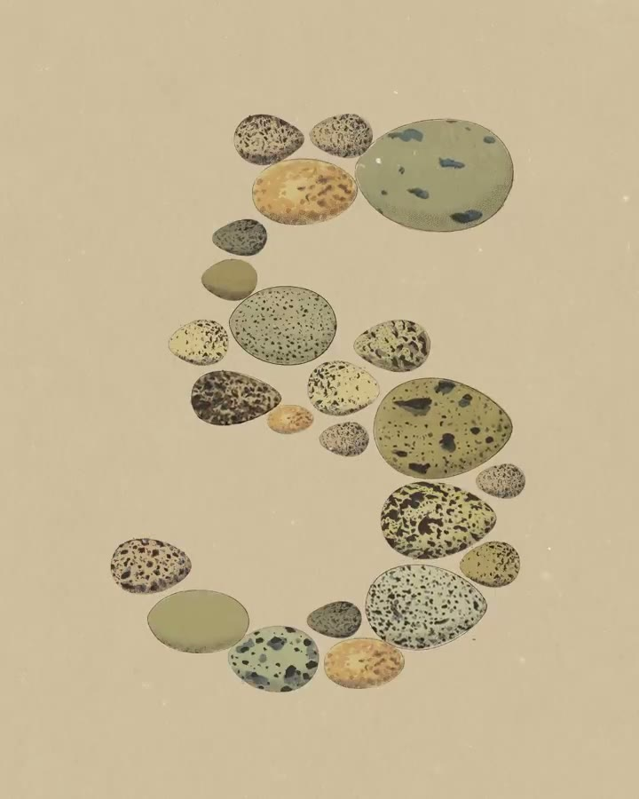
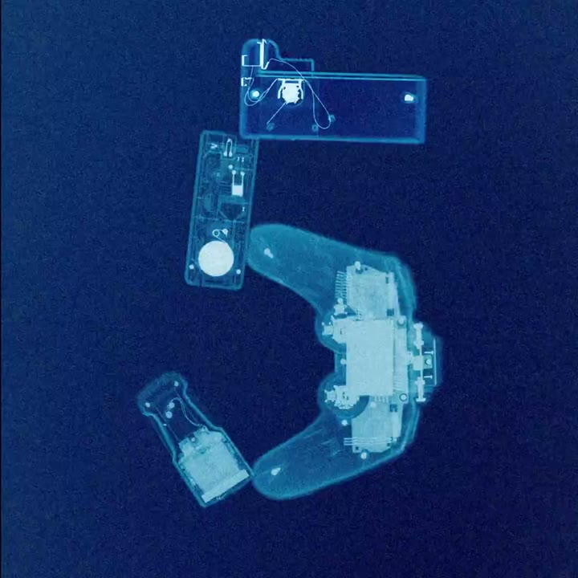
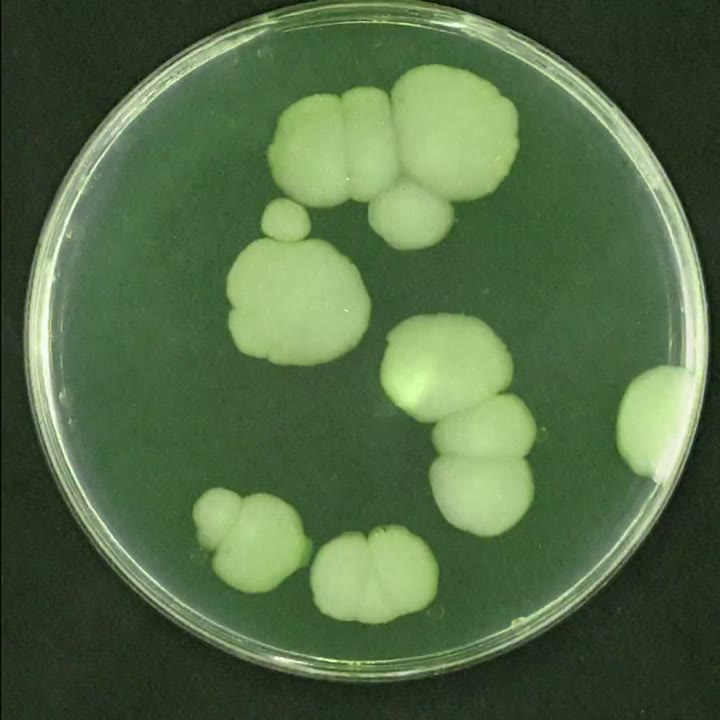
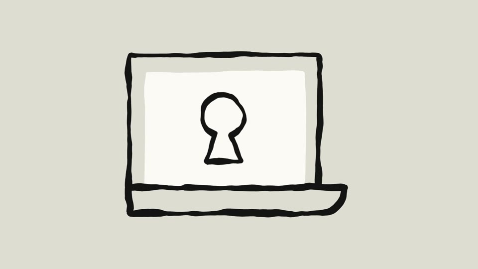
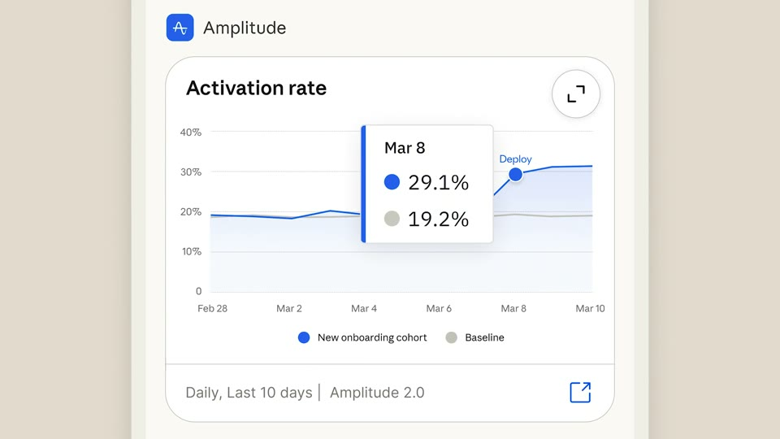

The ring
Food from every kitchen packs into the shape of Kallo’s ring gauge, shot after shot, faster and faster. It stops dead on one meal, and that ring of food becomes the app’s ring, filling with the real numbers.
Colour world. One ground per kitchen from the step blobs (terracotta, sage, violet, sky), then the final ring on the brand sweep; the gauge fills in the macro colours.
The film, beat by beat

A full table
Frame 1: a crowded, full-bleed top-down table of dishes from many kitchens. One lime wedge flies at the lens.

The ring, from food
Rice, grilled chicken and greens pack edge to edge into the 270° horseshoe of Kallo’s gauge, 75% of the frame height, on terracotta.

Every kitchen
A new ring each cut: ramen on sage, tacos on violet, porridge on sky, dal on terracotta. Cuts go from 1 s to 3 frames on a rising tick.

Dead stop
Silence. One ring holds: rice, chicken, greens. The sentence types beneath it.

The ring becomes the gauge
The food ring cross-fades into Kallo’s ring gauge at the same size and position; it fills to 548 kcal; the macros count in.

Pull back into the app
The gauge is the header of the Log on an iPhone slab; the meal card sits under it; then the same ring on the web dashboard.
Anything you eat
A roll of dish names passes a focus band: pho, tacos al pastor, jollof rice, carbonara, bibimbap…

Sign-off
The ring draws around the Kallo mark; the wordmark lands on the single warm tone.
How the product enters
A match cut on a shape: the ring made of food and the ring in the app are the same size in the same place, so the food literally turns into the product.
Closest to Claude’s model teasers. The ring, and the handoff into the real UI, are what make it Kallo’s.
Decisions for you
What we make
Codex: ~40 top-down ingredient cut-outs in one lighting set (the pipeline already made 20). Remotion packs them along the arc by code, so every ring is dense and gap-free. Data: numbers only on the final meal (548 kcal, real).